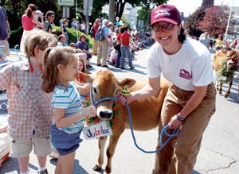
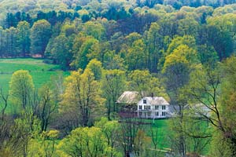
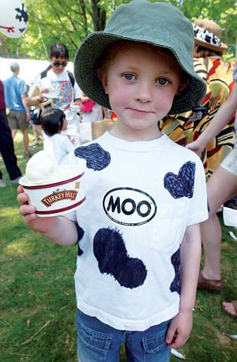

Faced with the challenge of preserving their agricultural heritage and their beautiful landscape, the residents of Brattleboro created a local tradition that has captured New England’s heart: “The Strolling of the Heifers,” a feminine version of Spain’s famous “Running of the Bulls,” according to founder Orly Munzing. Up to 50,000 people attend this event to celebrate regional agriculture with a parade, music, food, workshops and farm tours. Munzing’s inspiration came as she talked with a neighbor in his orchard. “Pretty soon,” he told her, “there won’t be any picturesque hay bales in Vermont.” But Munzing hopes she and her colleagues can help prevent that loss.
People love Brattleboro because it’s vintage Vermont, complete with covered bridges, dairy cows grazing on hillsides and church steeples jutting into the sky. This artsy, intellectual town on the Connecticut River is known for music, art and great food. The Brattleboro Food Co-op, in business since 1975, now has 5,000 members and 16,000 square feet of space. Members can do volunteer work in the community for discounts at the store. The co-op carries 500 different cheeses, and every month a producer is spotlighted at the store and in the co-op newsletter. According to Jenifer Morier, an employee at the co-op, “Sometimes people have a hard time getting through the store because they keep running into people they know.”
Do you live in Brattleboro? Have you visited? Please post a comment below.
Population: 11,994
Climate: Winters that usually make the holiday season white (average annual snowfall is 68 inches). Average January temperature: 25 degrees. July average: 73 degrees.
Median House Value: $180,000
Natural Assets: Skiing at Mount Snow, Haystack and Stratton ski areas; kayaking on the Connecticut River; mountain biking and hiking in the Green Mountains.
Sustainable Initiatives: Civic activism to preserve quality of life (for instance, no billboards allowed). Recently, 200 residents took the “localvore” challenge in which they pledged to eat locally grown foods for either a week or a month.
|
 JASON HENSKE The Strolling of the Heifers in Brattleboro |
 TIM SEAVER Brattleboro is vintage Vermont. |
 JASON HENSKE Brattleboro is committed to preserving the beauty and sustainability of their classic New England town. |